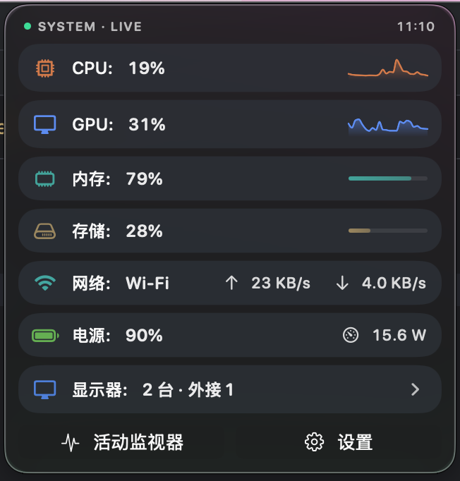
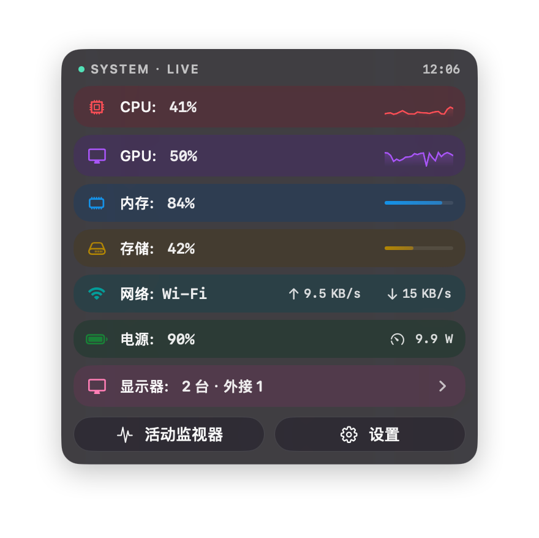
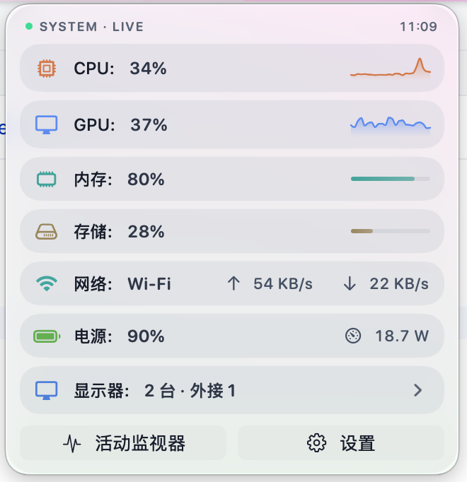
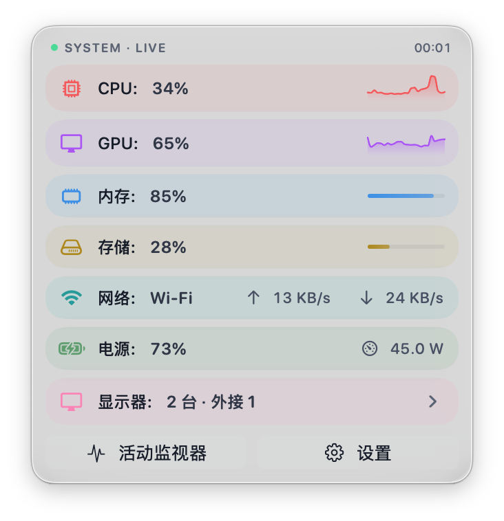
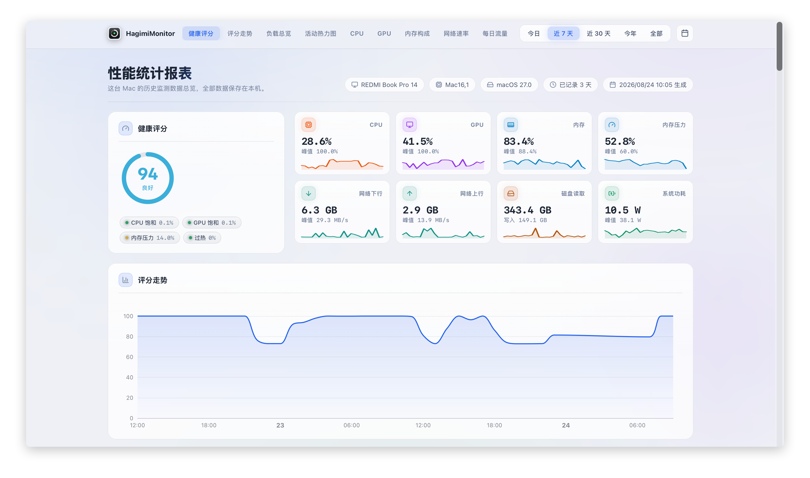
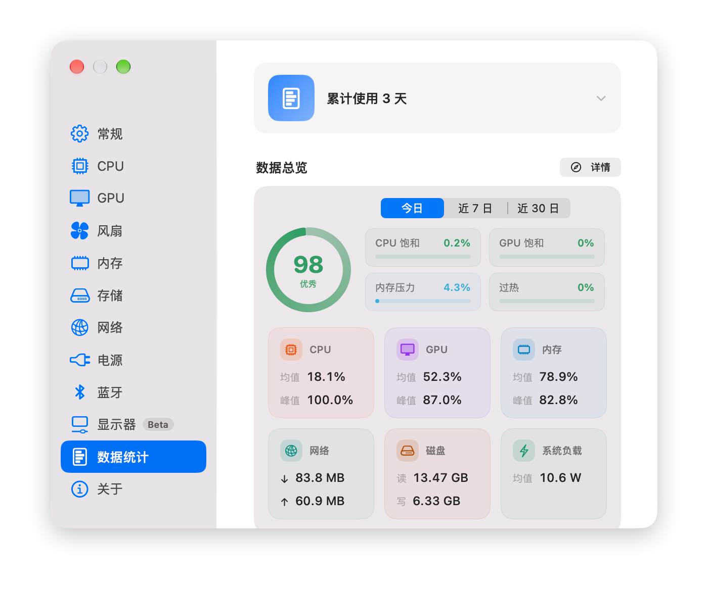
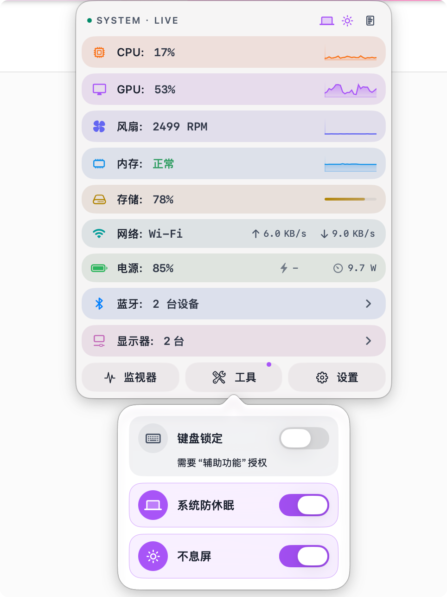

每一种样式，都精心打磨
Balanced浅色

Balanced深色
Vibrant浅色
Vibrant深色

详情展开Top 进程 · 明细
CPU、GPU、内存、存储、网络、电池、蓝牙、显示器——菜单栏轻点即展开实时面板，含折线趋势、占用进度与 Top 进程明细，并内置数据统计报告与快捷功能。
GitHub 版完全免费 · App Store 版为对开发者的一份支持



原生 Swift 打造，采样节流与主题缓存让它安静待在角落。需要时抬手即见，不需要时几乎察觉不到。
中性沉稳的 Balanced，或彩色玻璃的 Vibrant——跟随系统明暗自动适配，一键切换即时生效。

运行数据分层聚合入库，一键生成带趋势曲线、热力图的网页报表。健康评分、历史走势，随时回看。


键盘锁定、系统防休眠、屏幕不息屏——常用操作一键开关，日常办公更省心。

GitHub 直连版功能完整；App Store 版受沙盒限制，部分功能不可用。
| 功能 | GitHub 直连版 | App Store 版 |
|---|---|---|
| 八大监控模块（CPU / GPU / 内存 / 存储 / 网络 / 电池 / 蓝牙 / 显示器） | ✓ | ✓ |
| 数据统计 · 健康评分 · 事件检测（HTML 报表） | ✓ | ✓ |
| 快捷功能（键盘锁定 / 防休眠 / 不息屏） | ✓ | ✓ |
| 双主题 · 多种菜单栏样式 | ✓ | ✓ |
| CPU / 内存 TOP 进程列表 | ✓ | ✓ |
| 存储 / 网络 TOP 进程列表 | ✓ | ✕ |
| 温度传感器与风扇转速读取 | ✓ | ✕ |
| 显示器控制（亮度 / 音量 / 对比度 · 媒体键） | ✓ | ✕ |
由于 App Store 沙盒限制，部分功能无法在沙盒环境中正常工作，因此功能不完整。
免费下载，支持 macOS 15+ 及 Apple Silicon。
GitHub 开源免费，功能完整 · App Store 版是一份心意，感谢你的支持